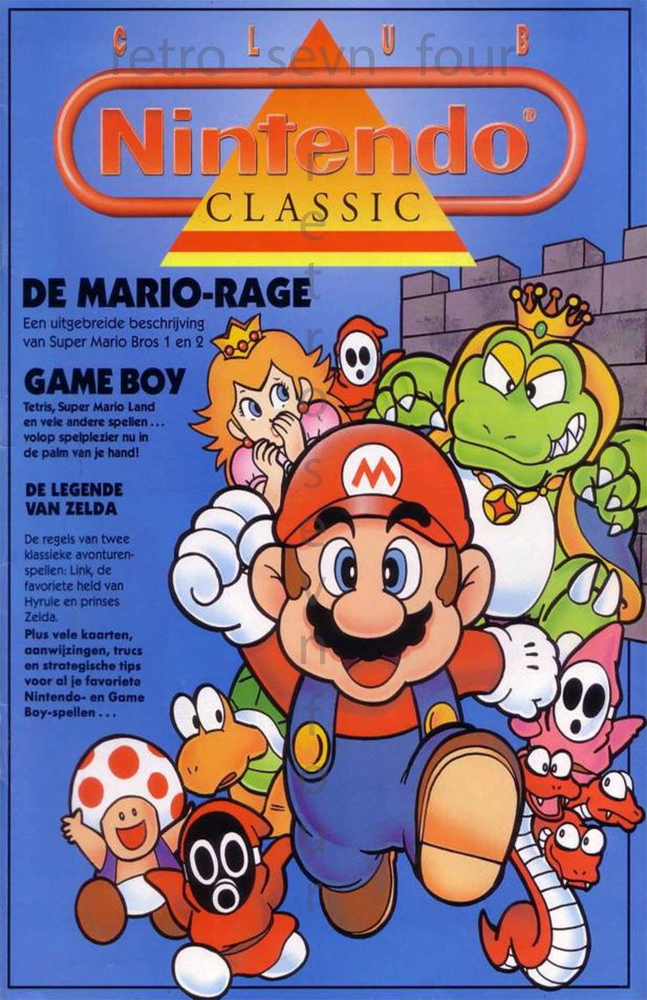
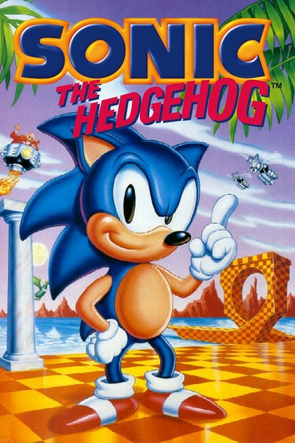
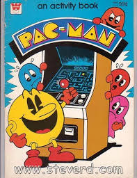

Está página está dedicada a los videojuegos retro de los años 80 y 90. Aquí encontrarás imágenes, enlaces y recuerdos de esa época dorada.
A continuación verá 3 de los juegos mas reconocidos en aquella epoca:
|  |  |  |
| Super Mario | Sonic | Pac-Man |
En los años 80 y 90 los videojuegos comenzaron a volverse muy populares en todo el mundo. Las consolas como el Nintendo Entertainment System (NES) y el Sega Genesis marcaron una época, porque llevaban los juegos que antes solo se podían disfrutar en las máquinas arcade directamente a la casa de las personas.
Uno de los personajes más importantes fue Mario, que se convirtió en un símbolo de Nintendo. Por otro lado, Sonic fue la mascota de Sega y competía directamente contra Mario para ver quién conquistaba a más jugadores. También estaba Pac-Man, un clásico que comenzó en las salas arcade y que hasta hoy sigue siendo recordado por su simplicidad y diversión.
Estos juegos no solo eran entretenimiento, también fueron parte de la cultura de los 90.
Muchos niños pasaban horas frente a la televisión tratando de pasar niveles, descubriendo trucos secretos,
y compartiendo con amigos.
A pesar de los gráficos sencillos, tenían mucha creatividad y lograron quedarse en la memoria de millones de personas.